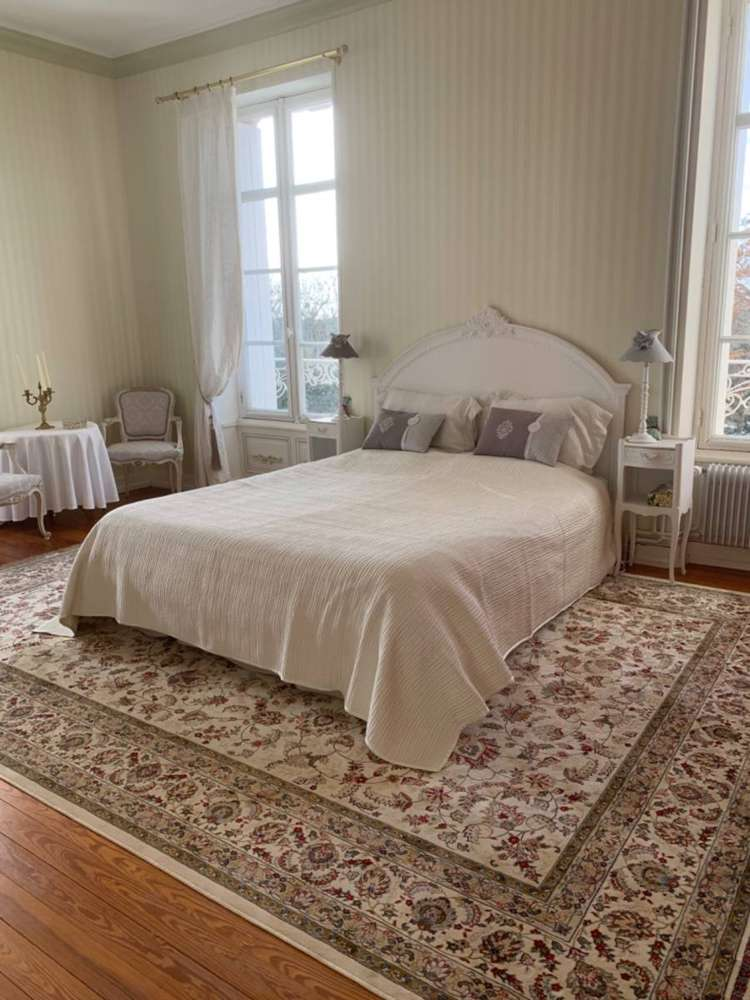
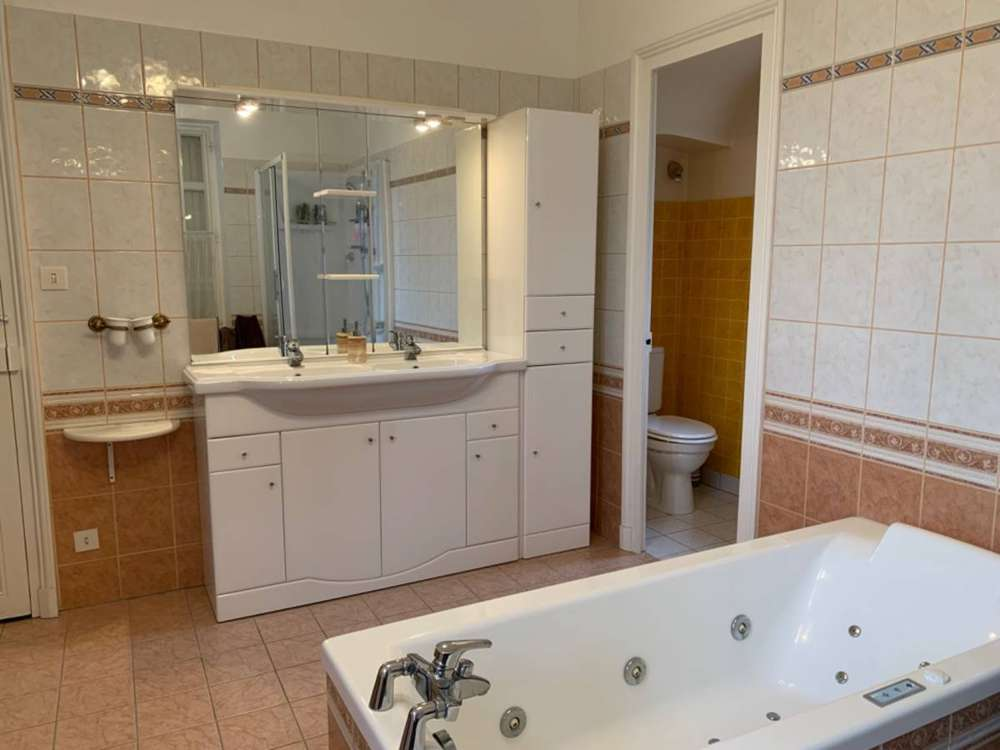
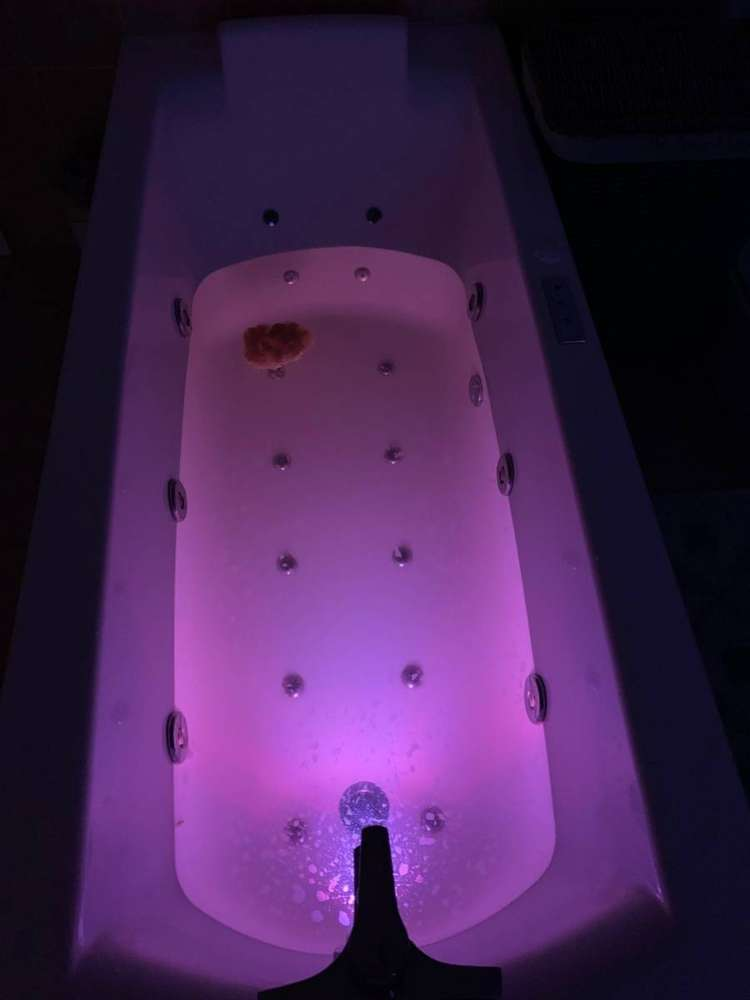
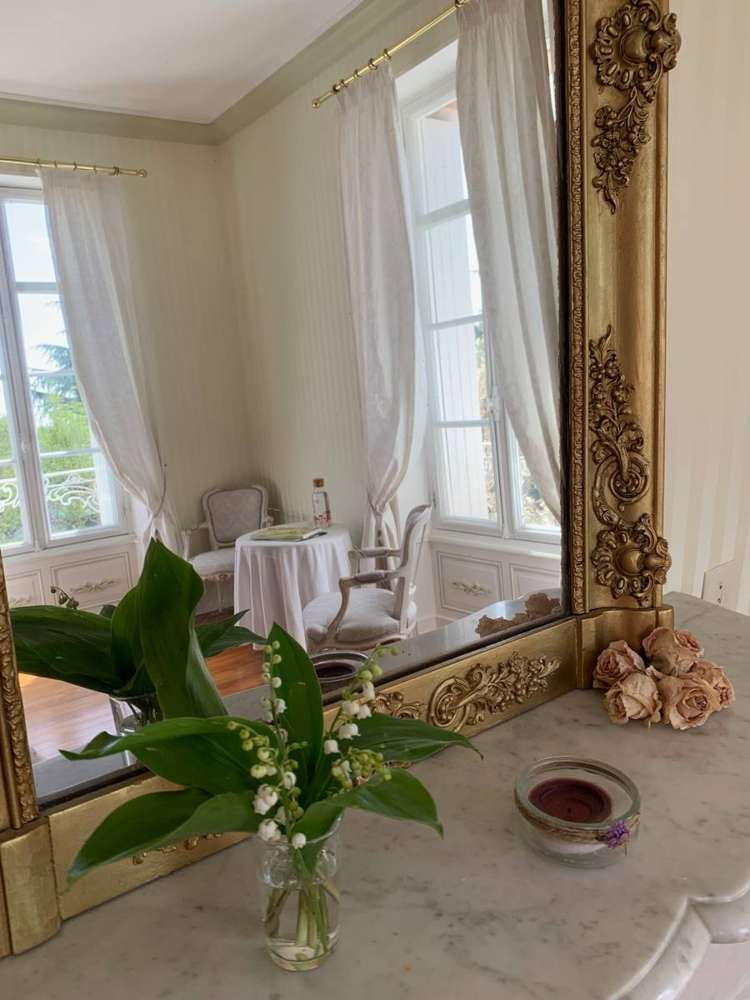

Chambre de luxe « Brisset de Morcourt »
Spacieuse et lumineuse
- 25 m² · 3 grandes fenêtres
- Grand lit double
- Baignoire à remous
- Petit coin salon, penderie
Une oasis de confort avec vue sur l'étang, pour un séjour reposant.
Capacité : [2 personnes — à confirmer]
125 € / nuit
petit-déjeuner inclus